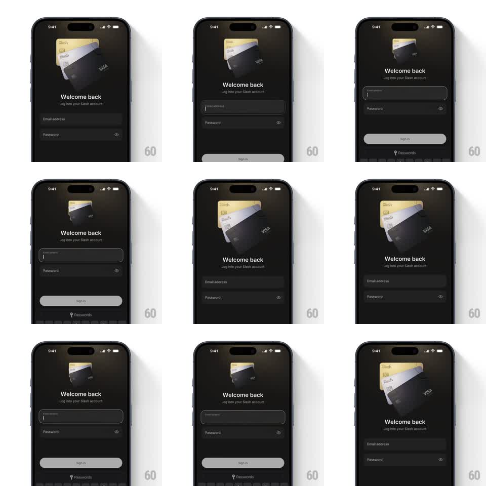

Media
Frame-by-frame

Rebuild this animation 1:1: Slash's login card fan - three credit cards (gold, silver, black) fan out above the Welcome back form when the inputs are idle and tuck into a tight stack with a spring when the email field takes focus.

Rebuild this animation 1:1: Slash's login card fan - three credit cards (gold, silver, black) fan out above the Welcome back form when the inputs are idle and tuck into a tight stack with a spring when the email field takes focus. ## Integration Integration: stack-agnostic spec - springs given as stiffness/damping, timed motions as duration + curve; map every value to your framework and animation library of choice. ## Scene Dark login screen: a stack of three overlapping card renders (gold, silver, black Visa) center-top, "Welcome back" headline with subline, email and password fields, a Sign in button, and a Passwords autofill hint when the keyboard is up. ## Motion spec Pattern: focus-driven card fan collapse and re-fan. - Idle: the three cards rest fanned - each rotated ~12 degrees apart, offset like a hand of cards, gently breathing (+/- 2px, 3s). - On input focus: the cards spring into a tight aligned stack (rotate to 0, converge offsets, scale 0.9, spring ~300/18) and dip 8px to clear the keyboard, dimming slightly (opacity 0.8). - On blur: the fan re-opens with a bouncier spring (~260/12), cards overshooting their fan angles by ~3 degrees before settling. - Form fields and headline stay put; only the card group animates. ## Calibration - The re-fan is the payoff - the overshoot should be visible but settle within 500ms. - Cards keep their overlap order through every state (gold back, silver mid, black front). ## Reduced motion Cards crossfade between fan and stack poses (250ms); no overshoot. ## Don't miss - The stack dims when collapsed so the form owns focus. - Fan angles are asymmetric - it looks dealt, not fanned by machine.